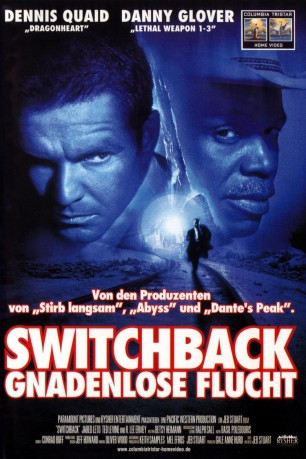

#3320 Switchback - Gnadenlose Flucht
Alternativ: Switchback
 
 IMDB-Wertung: 6.4 / 10
IMDB-Wertung: 6.4 / 10  Metascore: 0
Metascore: 0 
Seit seine Frau vor über einem Jahr einem dämonischen Serienkiller zum Opfer fiel und sein Sohn gekidnappt wurde, widmet sich FBI-Agent La Crosse mit jeder Faser seines Körpers der Jagd nach dem Ungeheuer. Längst gibt ihm seine Behörde keine Rückendeckung mehr; ein abgebrühter Südstaaten-Sheriff ist sein letzter Verbündeter. Die Spur im verschneiten Bergland der Rocky Mountains führt zu einem altgedienten Trucker und einem harmlosen Studenten, der sich als Anhalter an die Westküste durchkämpft. Einer von beiden muß der Mörder sein und das Versteck von LaCrosses Sohn kennen - doch wer?
Jahr: 1997
Dauer: 118 Minuten
FSK: 16
Land: USA Studio: Paramount PicturesTonspuren: DD5.1 - ,
Untertitel: Englisch,
Auflösung: 720p (1280x538) Größe: 4454 MB
Genre: Thriller, Krimi, Mystery
Regisseur: Jeb Stuart
Drehbuch: Jeb Stuart
Soundtrack: Basil Poledouris
Darsteller:
- Claudia Stedelin als Missy, the Babysitter
 R. Lee Ermey als Sheriff Buck Olmstead
R. Lee Ermey als Sheriff Buck Olmstead Walton Goggins als Bud
Walton Goggins als Bud Ted Levine als Deputy Nate Booker
Ted Levine als Deputy Nate Booker William Fichtner als Chief Jack McGinnis
William Fichtner als Chief Jack McGinnis Jared Leto als Lane Dixon
Jared Leto als Lane Dixon Danny Glover als Bob Goodall
Danny Glover als Bob Goodall- Gregory Scott Cummins als Rick
 Dennis Quaid als Frank LaCrosse
Dennis Quaid als Frank LaCrosse- Orville Stoeber als Hector Saldez
- Bill Rodgers als Cook
- Maggie Roswell als Fae
- Allison Smith als Becky
 Julio Oscar Mechoso als Jorge Martinez
Julio Oscar Mechoso als Jorge Martinez Kevin Cooney als Grant Montgomery
Kevin Cooney als Grant Montgomery Leo Burmester als Clyde 'Shorty' Callahan
Leo Burmester als Clyde 'Shorty' Callahan- Donnie L. Betts als John, Patrolman
- Mark Curry als Robbie
- Lionel Douglass als Man in Shower
- Paul Parducci als Man in Shower
- Christopher Michael als Colorado Trooper
 Robert Peters als Colorado Trooper
Robert Peters als Colorado Trooper- Joe Alfasa als Small Mexican Man
- Shelsie Blake als Waitress , uncredited
- Marty Lindsey als Swat team , uncredited
- Velvet Rhodes als Deputy Sheriff McLaughlin , uncredited
- Christopher Senger als Bill Suderland , uncredited
 Ian Nelson als Andy LaCrosse
Ian Nelson als Andy LaCrosse- Brent Hinkley als Man on Porch
- Louis Schaefer als Sim
- Robert L. Somers als Rancher
- Lexie Stuart als Ranchers Daughter
 Ted Markland als Bartender
Ted Markland als Bartender- Tommy Puett als Ben
- Stuart Proud Eagle Grant als Luke
- Ken Thorley als Morgue Attendant
- Pat Mahoney als Highway Patrol Captain
- Michael K. Osborn als Deputy
- Wendelin Harston als Sally
- Dean Hallo als SWAT Leader
- Robert Himber als Police Captain
- Roy Yerbey als Truck Driver
- Allorah Creevay als Waitress
- Gil Colon als Deputy
- Merle Kennedy als Betty, the Store Clerk
- Stan Parks als FBI Agent
- Ben Fuhrman als Captain Hiber
- Lois Hicks als Ruth
- Gary Giem als Al
- Martin David Boyd als Hank
Datei: X:\1997\Switchback - Gnadenlose Flucht (1997, FSK16, 1280x538).mkv seit 11.03.2016
Festplatte: HD 1996-2002
 Es gibt insgesamt 83 Filme in der Gruppe '1997'
Es gibt insgesamt 83 Filme in der Gruppe '1997'